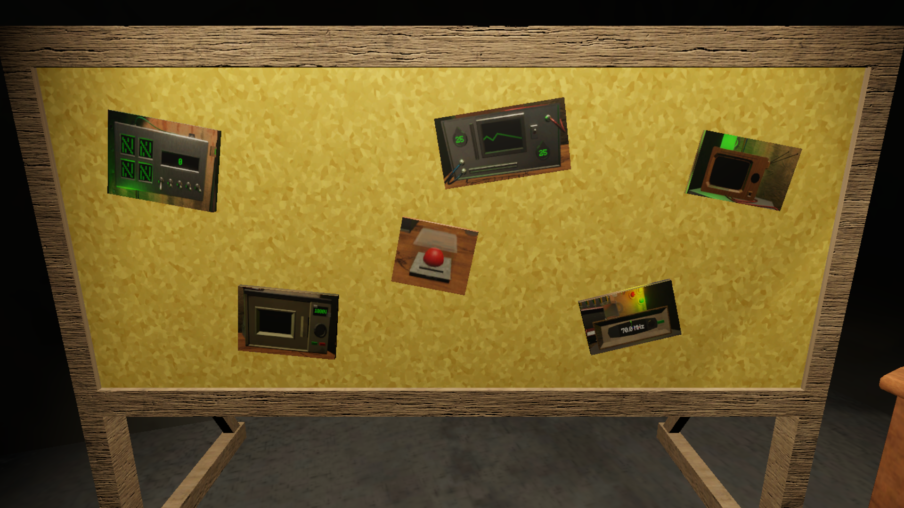
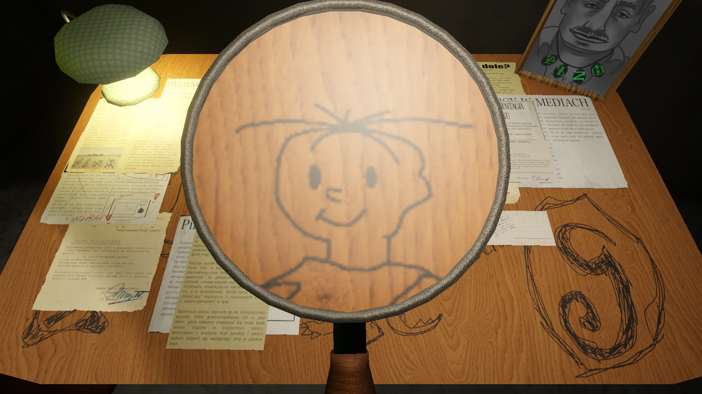
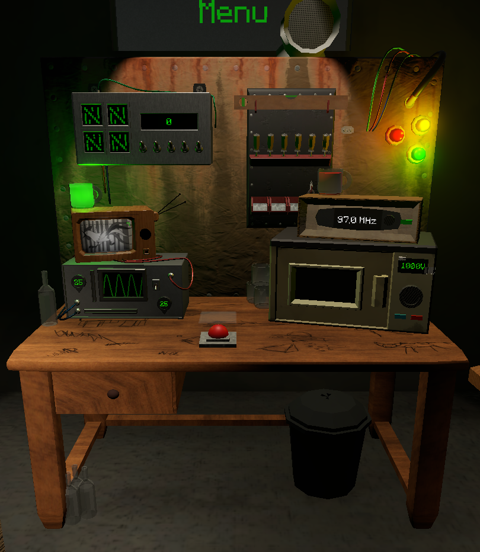
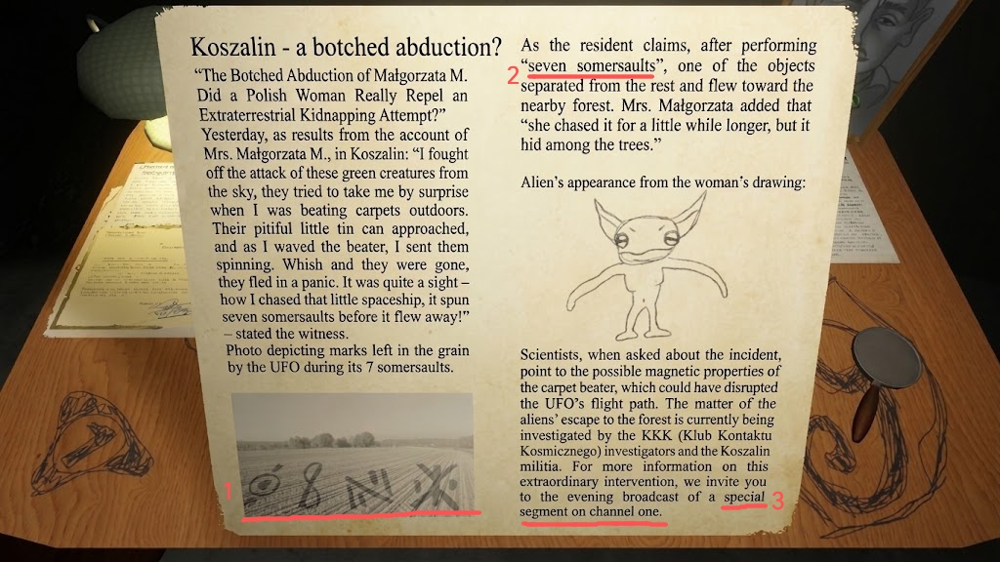

1. Zone 01
The Corkboard
Covered in photos of the uncle's crucial tools to contact UFO, it updates as player ends run, and checks wheter the requirements are met by string mapping out the clues.
Turning environmental cues and cryptic clues into an immersive investigative puzzle with 5 distinct endings.
Working as Narrative Designer and Writer during a 1-week game jam, my focus centered on crafting environmental storytelling, investigative puzzles, and historical worldbuilding.
Created during a week-long game jam, Project N-O-L places the player in the shoes of a nephew of a UFO fanatic operating in communist-era Poland. Operating from a cramped, dreary basement in a concrete prefab block of flats, the physical layout of the room is essential for storytelling.
I designed the blockout and layout of the basement to instantly communicate the authentic "conspiracy uncle" vibe through environmental design:

Covered in photos of the uncle's crucial tools to contact UFO, it updates as player ends run, and checks wheter the requirements are met by string mapping out the clues.

Scratched surfaces featuring nostalgic Polish pop-culture references of the era while being a hub for the uncle's chaotic research, as it contains many newspaper clippings and documents which might hide something terrestrial.

The true heart of operations holding the vital equipment needed to trigger contact, such as microwave, bulbulator, and other makeshift devices which for a normal person would seem out of place.
Designing the investigation required building a coherent puzzle flow where hints embedded directly within in-game texts (like newspapers and secret documents) guide the player toward specific thematic conclusions.
The game features 5 distinct endings, each tied directly to how the player interprets clues and combines frequencies, signals, and items. Every hint maintains strict narrative consistency with the communist-era setting and the protagonist's eccentric worldview.

As shown in this newspaper clipping, the player must decipher a cryptic message embedded in the text to figure out the correct bulbulator settings. The marks left by the visitors on the field (figure 1) serve as direct codes for the device, while their peculiar movement, making seven somersaults (figure 2) - indicates that the number 7 must be entered into the second part of the bulbulator, as the extraterrestrials seem to be trying to make contact with those wacky movements. Finally, figure 3 points the player toward the TV for channel one, which is the next part of this story and is covered in a new airing. All of this comes together in a quirky, eccentric newspaper covering an absurd, surreal story that happens in the world of the game.
*Note: The text shown in the screenshot has been translated from Polish to English for clarity, though the game itself is in Polish.*
Once clues are gathered from newspapers, television signals, and radio broadcasts, the player interacts with eccentric hardware to attempt communication.
The core loop revolves around taking data extracted from environmental storytelling and translating it into settings for bizarre summoning devices.
Gameplay recording demonstrating how clues from documents are applied to equipment like Bulbulator as seen in an example.
Audio must serve the narrative deeply. The music and broadcasts playing on the radio need authentic thematic context within the game's universe to sell the atmosphere effectively.
2. Interior Layout & WorldbuildingThe spatial arrangement of a room is a powerful storytelling tool. Proper layout instantly communicates character psychology, historical context, and narrative tone without relying on exposition.
3. Scoping & Player GuidanceIn games featuring abstract settings and heavy reading elements, adding a clear, well-structured onboarding tutorial is critical to prevent player frustration and ensure smooth puzzle flow - this I've learned the hard way, as the game jam's time constraints limited the ability to thouroughly playtest the game.